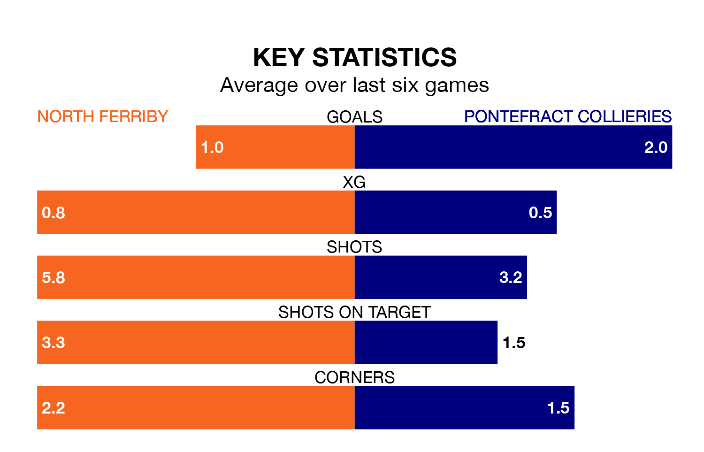

North Ferriby host Pontefract Collieries on Tuesday in the Northern Premier League Division One East.
In their last league match, on Saturday, North Ferriby beat Hebburn Town 1-0 at home.
Pontefract Collieries also won, 1-0 away at Liversedge.
With 41 goals in 21 games so far this season, Pontefract Collieries are the league's third-highest scorers with 2.0 goals per game. And they are conceding fewer than average, letting in 27 goals at a rate of 1.3 per game.
North Ferriby, meanwhile, are average scorers, with 1.6 goals per game. They have conceded 2.0 goals per game.
The home side are in disappointing form in the Northern Premier League Division One East, with two wins and four losses from their last six games.
With three wins and two draws over that period, the visitors' form is better – they have taken 11 points from 18, compared to North Ferriby's six.
Pontefract Collieries are seventh in the table after 21 games, of which they have won 11 and drawn five, earning 38 points.
North Ferriby are two places behind Pontefract Collieries in ninth, with 10 wins and two draws putting them on 32 points.
Updated: 13:20 (UTC), 29/01/24